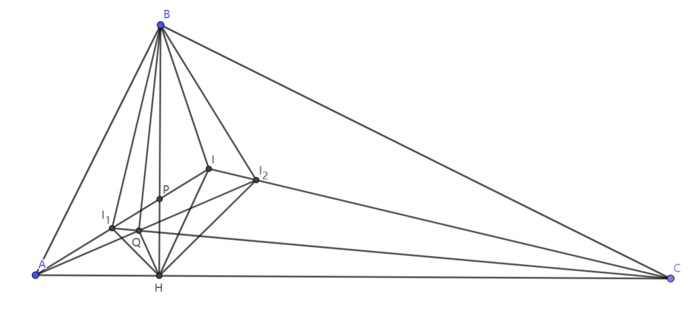
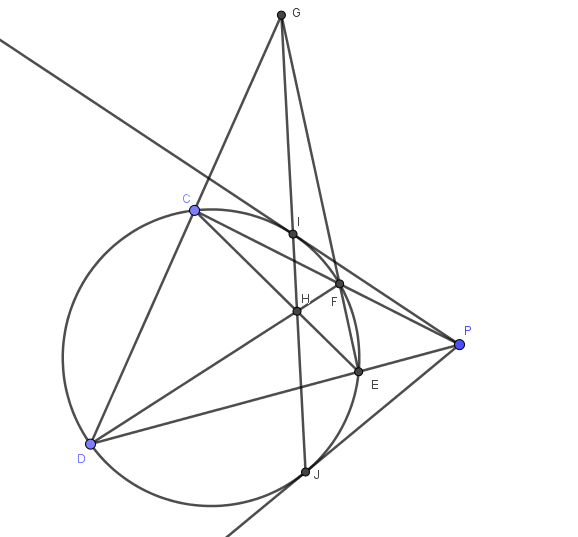
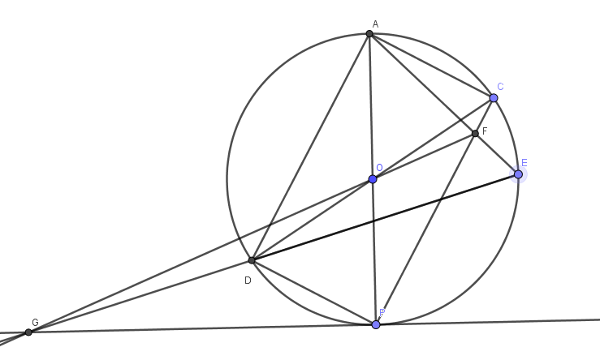
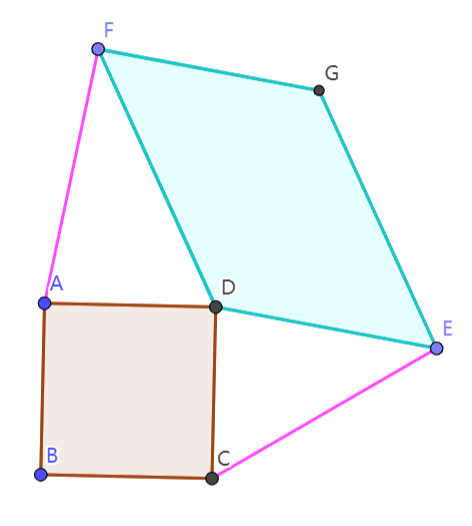
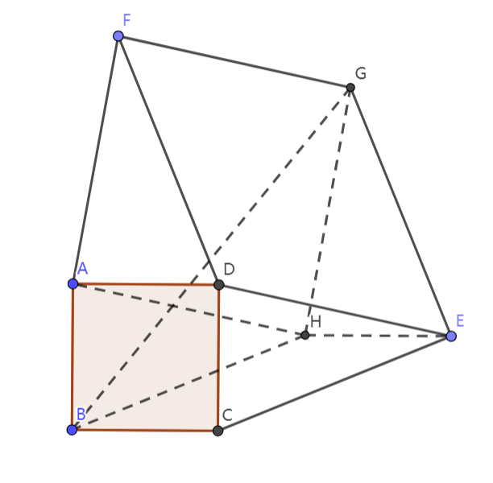

邵题一百答
ST1(5)¶

问 如图，BH为Rt \triangle ABC(AB<BC)的高，I,I_1,I_2分别为\triangle ABC,\triangle ABH, \triangle BCH的内心，P为II_1与BH的交点，Q为AI_2与CI_1的交点，求三条边由已知线段围成的，且三个角都有字母名称标注的三角形中相似三角形的组数
答 一共有32组,分别是 \triangle ABC \sim\triangle AHB \sim\triangle BHC \sim\triangle I_1HI_2 \triangle ABI_1 \sim\triangle ACI \sim\triangle BCI_2 \sim\triangle I_2II_1 \triangle ABI \sim\triangle AHI_1 \sim\triangle BHI_2 \sim\triangle BI_1I \triangle ACQ \sim\triangle I_1I_2Q, \triangle AI_1Q \sim\triangle CI_2Q, \triangle AI_2I \sim\triangle CI_1I \triangle BCI \sim\triangle HBI_1 \sim\triangle I_1BP \sim\triangle I_2BI \sim\triangle HCI_2 \triangle BI_1I_2 \sim\triangle HPI_1
ST2(3)¶
问 已知未知圆心的一圆与圆外一点P，用无刻度的直尺尺规作出圆过点P的两条切线
答  如图PI与PJ为两条过点P的圆的切线
ST3(4)¶
问 已知圆O与圆上一点P，用无刻度的直尺尺规作出圆O过点P的一条切线
答  如图，PG即为过点P的圆O的切线
ST4(4)¶
问 已知\overline{abcd},\overline{cdab}+1为完全平方数，求\overline{abcd}
答 \overline{abcd}=1521时， \overline{abcd}=1521=39^2,\overline{cdab}+1=2116=46^2 为四位数内的唯一一组合法解
ST5(4)¶

问 如图，已知正方形ABCD边长为a，E,F为平面内两点，且满足AF=CE=r，以DF,DE为邻边作平行四边形DFGE，问G的运动轨迹的区域面积
答  以FG,GH为边作平行四边形FAHG 则FG与AH平行且相等，又在平行四边形DFGE中FG与DE平行且相等，故DE与AH平行且相等 知四边形ADEH为平行四边形
故AD与EH平行且相等，又在正方形中AD与BC平行且相等，故EH与BC平行且相等，因而四边形BHEC是平行四边形
故在平行四边形AFGH与BHEC中，GH=AF=r,BH=CE=r 在B,H,G三个点中BG\le BH+HG=r+r=2r 故G的轨迹为以A为圆心，2r为半径的一个圆面 其面积为S=\pi (2r)^2=4\pi r^2
（这道题可以解析+向量，其实是同样的道理）